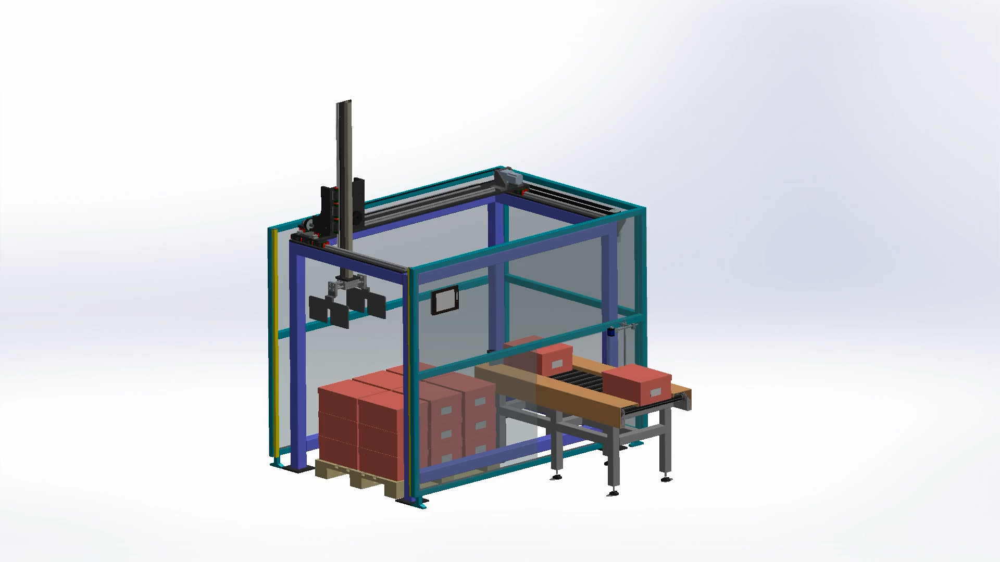
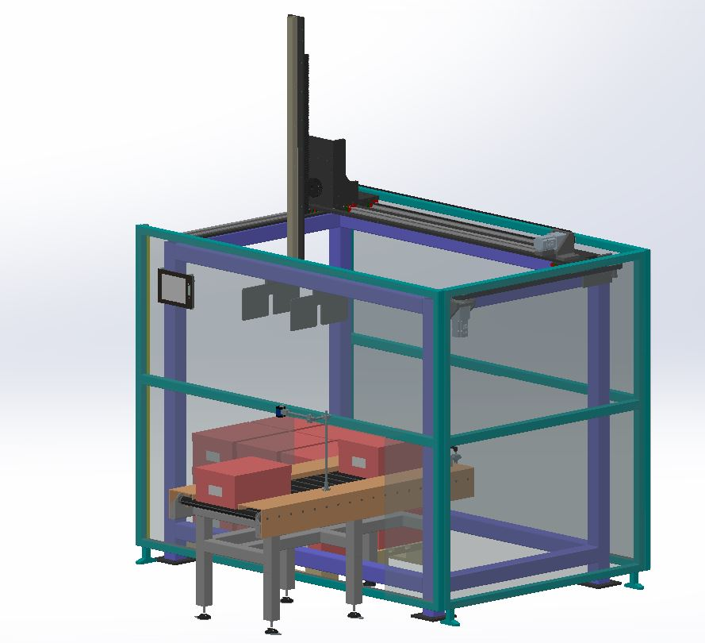
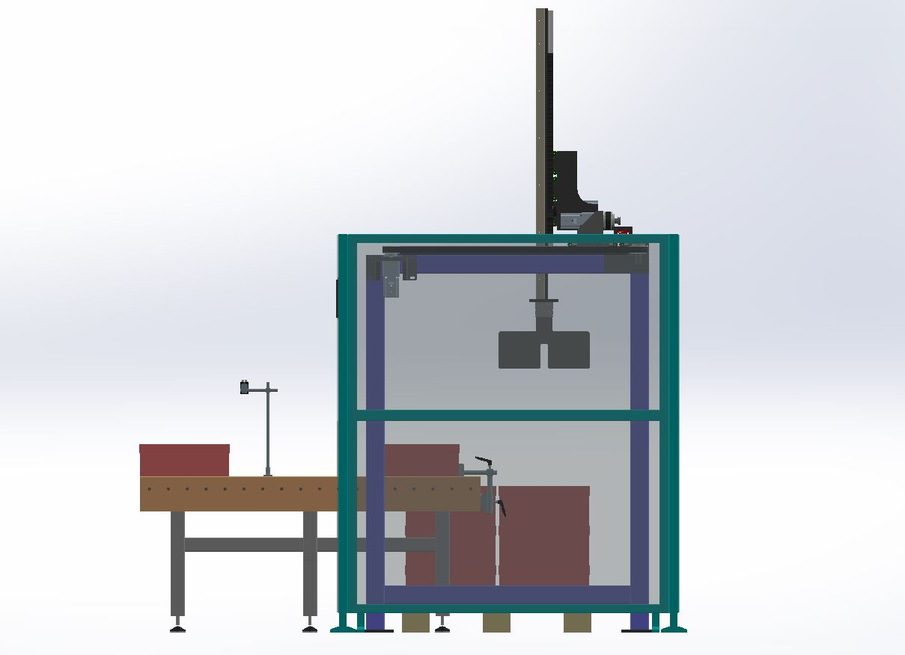

Cartesian_XYZ
A heavy-duty linear motion system designed for automated palletizing and material handling. Engineered with SolidWorks, featuring reinforced aluminum extrusion frames and multi-axis synchronized control.
Mechanical_Specs
01_Mechanical_Design
The robot utilizes a high-rigidity 2040/2020 aluminum extrusion frame. The X and Y axes are belt-driven using precision GT2 timing belts, while the Z-axis maintains vertical stability through a lead-screw mechanism.

// Structural_Backbone
Full orthogonal assembly showcasing the dual-stepper X-axis alignment and the cantilevered Y-axis. The design minimizes vibration during high-speed palletizing cycles.
Linear_Transmission
- X/Y AxisGT2 Belt Driven
- Z Axis8mm Lead Screw
- GripperServo Actuated

End_Effector
Custom-designed mechanical gripper developed in SolidWorks. Features a high-torque servo for variable pressure control, allowing it to handle diverse object geometries with precision.

02_Electronics_Control
Driven by an Arduino Mega 2560 backplane, the system utilizes industrial-grade TB6600 stepper drivers to ensure reliable current delivery and thermal management during extended pick-and-place operation.
Wiring_Topology
The X-axis uses two synchronized stepper motors to prevent gantry racking. All motor signals (PUL/DIR/ENA) are routed through a central control panel with shielded cabling to minimize EMI interference during high-speed transitions.
03_Motion_Firmware
// Pulse Synchronization Logic void performCycle() { moveTo(X_SRC, Y_SRC); // Locate Source actuateGripper(CLOSE); // Engage Part lift(Z_SAFE_HEIGHT); // Linear Lift moveTo(X_DST, Y_DST); // Translation actuateGripper(OPEN); // Release returnToHome(); // Zero Calibration }
Custom C++ firmware implementation handles non-blocking stepper control. The motion engine uses a defined pulse-width delay to manage acceleration curves, ensuring smooth deceleration at target coordinates to prevent payload inertia drift.